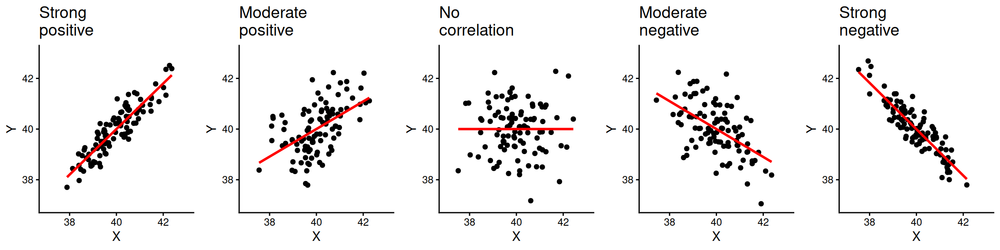

Correlation
What is correlation?
When conducting empirical research, we are often interested in associations between two variables, for example, personal income and attitudes towards migrants. In this lab we will focus on visualizing relationship between variables and how to measure it. In quantitative research, the main variable of interest in an analysis is called the dependent or response variable, and the second is known as the independent or explanatory variable. In our example, we can think of personal income as the independent variable and attitudes as the dependent.
The relationship between variables can be positive, negative, or non-existent. The figure below shows these types of relationships to different extents. The association is positive when one of the variables increases and the second variable tends to go in the same direction (that is increasing as well). The first plot on the left-hand side shows a strong positive relationship. As you can see, the points are closely clustered around the straight line. The next plot also shows a positive relationship. This time the relationship is moderate. Therefore, the points are more dispersed in relation to the line compared to the previous one.
The plot in the middle, shows two variables that are not correlated. The location of the points is not following any pattern and the line is flat. By contrast, the last two plots on the right hand-side show a negative relationship. When the values on the X axis increase, the values on the Y axis tend to decrease.
Data and R environment
We will continue working on the same ‘NILT’ Posit Cloud project with the the 2012 Northern Ireland Life and Times Survey (NILT) data.
As usual, we will need to setup an R Markdown file for today’s lab. I have kept the steps brief this week. However, if you are unsure about anything, take a look back at Lab 6 which has more detailed explanation of the steps.
To set up a new R Markdown file for this lab, please use the following steps:
- Please go to your ‘Lab Group ##’ in Posit Cloud (log in if necessary);
- Open your own copy of the ‘NILT’ project from the ‘Lab Group ##’;
- Within the Files tab (bottom-right pane) click ‘New File’, then ‘R Markdown’ from the drop-down list of options;
- Within the ‘Create a New File in Current Directory’ dialogue, name it ‘Lab-7-Correlation.Rmd’ and click OK.
- Feel free to make any adjustments to the YAML header.
- Create a new code chunk, with
```{r setup, include=FALSE}and in the chunk:
knitr::opts_chunk$set(message = FALSE, warning = FALSE)- Create another code chunk, named
premableand again withinclude=FALSE. Then add the following in the chunk:
Please note that we are loading the haven package again this week as we will be coercing more variables. As a reminder, we need to load haven as the initial dataset we started with was in the SPSS file format. Whilst we coerced variables and saved it in R’s file format, the file still maintains info from SPSS. We will be using this info in coercing more variables in this session, so need to have the haven package loaded.
- Run the
preamblecode chunk and if no errors, then everything is setup for this session.
Perception of Migrants Variables
We opened this lab with example of attitude towards migrants. Let’s continue with this example by using new variables from the NILT survey. As this is the first time we are using them, we will need to coerce them into their appropriate variable type first.
Create a new code chunk, add the code below, and then run the chunk:
# Age of respondent’s spouse/partner
nilt$spage <- as.numeric(nilt$spage)
# Perception of migrants
nilt <- nilt |> mutate_at(vars(mil10yrs, miecono, micultur), as.numeric)We used as.numeric() previously in Lab 2 and Lab 3 for coercing numeric variables. Since this is a base R function, we pass our variable of interest to the function in the form dataframe$column. Here, we are coercing nilt$spage. If you look at page 7 of the NILT Teaching Resources documentation, you will see this variable is for the age of the respondent’s spouse or partner.
Next, we use the mutate_at() function. As it comes from the Tidyverse, we can use dataframe |> function() and name our variables directly - mil10yrs rather than nilt$mil10yrs. You can read more about mil10yrs, miecono, and micultur on page 14 of the NILT Teaching Resources documentation.
The mutate_at() function is similar to the mutate() function we used in Labs 2 and 3. However, this function has the nice feature of letting us apply the same transformation to multiple columns. It’s basic usage is data_frame |> mutate_at(variables, function), where variables is the variables to transform and function the function to apply to them. The vars() function is just a nice Tidyverse way to do similar as c("variable1", "variable2", ...) that we used with sumtable(). Then as.numeric() is the function that will be applied to our variables.
Bonus activity - In our code chunk above, we used base R style code to coerce our spage variable and then Tidyverse for the rest. However, as we are applying the same transformation - coercing the variables as numeric - we could actually do coerce all four with a single line of code. Can you see how?
Again as wee reminder - whilst these slight differences between base R, Tidyverse, and other packages - such as vtable - can be confusing at first, it is just different design philosophies behind the packages and functions. The general rule of thumb is that base R functions tend to require dataframe$column as the functions work with multiple object types, so do not have separate arguments for the dataframe and the variables of interest. In contrast, the Tidyverse as it is built around using dataframes has functions with separate arguments for the dataframe and variables of interest. Most Tidyverse functions then use dataframe |> function(... format to specify the dataframe and then let you specify the variables directly - column rather than dataframe$column. Functions from packages outwith the Tidyverse can vary, with some following the Tidyverse approach or others - like vtable - have functions that have similar arguments but with slightly different syntax. Again - to re-emphasise - you do not need to memorise all this. Instead, this is why it is important to learn how to find and read package/function documentation. Similarly, this is another reason why it can be invaluable to curate your own notes containing working code examples with comments for future reference.
OK back to our variables. We will also create a new variable called mig_per by summing the respondent’s opinion in relation to migration using the three variables we just coerced: mil10yrs, miecono and micultur. This then let’s us have an overall perception value by combining the individual values for each of the variables.
To create the variable - insert a new chunk, add the code below, and then run the chunk:
This code again mixes new functions with ones we have previously used:
-
rowwise()is a Tidyverse function that is the equivalent of saying ‘for each row’. We are using it here as we are wanting to calculate a value for each row for the new column we are creating. Withoutrowwise()thesum()function below, adding the values for the three existing variables, would add the values for all rows for the three columns together rather than calculating the value for each row individually. -
mutate(mig_per = sum(mil10yrs, miecono, micultur, na.rm = TRUE))uses the - hopefully - now familarmutate()function, specifying we are creating a newmig_pervariable that is equal to the value of our three existing variables summed together - using thesum()function. Thena.rm = TRUEtellssum()to ignore NA values. -
ungroup()is a Tidyverse function that signals that we are ending ourrowwise(). So, it is basically the equivalent to saying ‘OK stop doing this for each row individually’. -
mutate(mig_per = na_if(mig_per, 0))then goes through our newmig_pervariable and sets any row where the value is 0 to NA instead.
Visualising correlation
Visualizing two or more variables can help to uncover or understand the relationship between these variables. As briefly introduced in the previous session, different types of plots are appropriate for different types of variables. Therefore, we split the following sections according to the type of data to be analysed.
Within your R Markdown file, remember to create a new code chunk for each example and you can use ## Heading 2, ### Heading 3, and so on to help structure it into sections.
Numeric vs numeric
To illustrate this type of correlation, let’s start with a relatively obvious but useful example. Suppose we are interested in how people choose their spouse or partner. The first characteristic that we might look at is age. We might suspect that there is a correlation between the nilt respondents’ own age and their partner’s age.
Since both ages are numeric variables, a scatter plot is appropriate to visualise the correlation. To do this, let’s construct a ggplot.
nilt |> ggplot(aes(x = rage, y = spage)) +
geom_point() +
geom_smooth(method = "lm", se = FALSE) +
labs(
title = "Respondent's age vs respondent’s spouse/partner age",
x = "Respondent's age", y = "Respondent’s spouse/partner age"
)As covered last week, we start with the function ggplot(), and use + at the end of each line to compose our functions for the plot together. In aesthetics aes(), define the respondent’s age rage on the X axis and the respondent’s spouse/partner age spage on the Y axis. As a general convention in quantitative research, the response/dependent variable is visualised on the Y axis and the independent on the X axis. Here we are using the geom_point() function to specify the plot type. In contrast to the usual 3 line minimum pattern for constructing a plot, we have four here, with geom_smooth() added after geom_point(). This adds a straight line which describes the best fit between all the points in the graph.
From the plot above, we see that there is a strong positive correlation between the respondent’s age and their partner’s age. We see that for some individuals their partner’s age is older, whereas others is younger. Also, there are some dots that are far away from the straight line. For example, in one case the respondent is around 60 years old and the age of their partner is around 30 years old (can you find that dot on the plot?). These extreme values are known as outliers.
We may also suspect that the respondents’ gender is playing a role in this relationship. We can include this as a third variable in the plot by colouring the dots by the respondents’ sex. To do this, let’s specify the colour argument in aesthetics aes() with a categorical variable rsex.
nilt |> ggplot(aes(x = rage, y = spage, colour = rsex)) +
geom_point() +
geom_abline(slope = 1, intercept = 0, colour = "gray20") +
labs(
title = "Respondent's age vs respondent’s spouse/partner age",
x = "Respondent's age", y = "Respondent’s spouse/partner age"
)This time rather than geom_smooth(), we have used geom_abline() to add a line showing where we would expect to see dots if the respondent and their spouse/partner were exactly the same age - the slope and intercept part of this code will become clearer when we cover simple linear regression next week. We observe a clear pattern in which most female participants are on one side of the line and most males on the other. As we can see, most female respondents tend to choose/have partners who are older, whereas males choose/have younger partners.
Activity 1
In your R Markdown file, use the nilt data object to visualise the relationship of the following variables by creating a new chunk.
- Create a scatter plot to visualize the correlation between the respondent’s overall opinion in relation to migration
mig_perand the respondent’s agerage. Remember that we just created themig_pervariable by summing three variables which were in a 0-10 scale (the higher the value, the better the person’s perception is). Inaes(), specifyrageon the X axis andmig_peron the Y axis. Useggplot()function andgeom_point(). Also, include a straight line describing the points using thegeom_smooth()function. Within this function set themethodargument to'lm'. - Run the code chunk. What type of relationship do you observe? Comment as regular text (i.e. as text not inside the code chunk) in your R Markdown file the overall result of the plot and whether this is in line with your previous expectation.
Numeric vs categorical
As briefly introduced in the last lab, correlations often occur between categorical and numeric data. A good way to observe the relationship between these types of variables is using a box plot. Which essentially shows the distribution of the numeric values by category/group.
Let’s say we are interested in the relationship between education level and perception of migration. The variable highqual contains the respondent’s highest education qualification. Using ggplot(), we can situate mig_per on the X axis and highqual on the Y axis, and plot it with the geom_boxplot() function. Note that before passing the dataset to ggplot, we can filter out two categories of the variable highqual where education level is unknown (i.e. “Other, level unknown” or “Unclassified”). Also notice how we can do both filter highqual and use the result of that filtering in a ggplot using pipes - |>.
nilt |>
filter(highqual != "Other, level unknown" & highqual != "Unclassified") |>
ggplot(aes(x = mig_per, y = highqual)) +
geom_boxplot()
From the plot above, we see that respondents with higher education level (on the bottom) appear to have more positive opinion on migration when compared to respondents with lower education level or no qualifications (on the top). Overall, the data shows a pattern that the lower one’s education level is, the worse their opinion towards migration is likely to be. Since education level is an ordinal variable, we can say this is a positive relationship.
Activity 2
Using the nilt data object, visualize the relationship of the following variables by creating a new chunk.
- Create a boxplot to visualize the correlation between the respondent’s overall opinion in relation to migration
mig_perand the political party which the respondent identify withuninatid. Useggplot()in combination withgeom_boxplot(). Make sure to specifymig_peron the Y axis anduninatidon the X axis inaes(). - Do you think the opinion towards migration differs among the groups in the plot? Comment on the overall results in regular text of your R Markodwn document.
Measuring correlation
So far we have examined correlation by visualizing variables only. A useful practice in quantitative research is to actually measure the magnitude of the relationship between these variables. One common measure is the Pearson correlation coefficient. This measure results in a number that goes from -1 to 1. A coefficient below 0 implies a negative correlation whereas a coefficient over 0 a positive one. When the coefficient is close to positive one (1) or negative one (-1), it implies that the relationship is strong. By contrast, coefficients close to 0 indicate a weak relationship. This technique is appropriate to measure linear numeric relationships, which is when we have numeric variables with a normal distribution, e.g. age in our dataset.
Let’s start measuring the relationship between the respondent’s age and their partner’s age. To do this in R, we should use the cor() function. In the R syntax, first we specify the variables separated by a comma. As cor() is a base R function, we need to be explicit when specifying our variable names, using dataframe$column, as shown below. Also, I set the use argument as 'pairwise.complete.obs'. This is because one or both of the variables contain more than one missing value. Therefore, we are telling R to use complete observations only.
cor(nilt$rage, nilt$spage, use = "pairwise.complete.obs")[1] 0.9481297The correlation coefficient between this variables is 0.95. This is close to positive 1. Therefore, it is a strong positive correlation. The result is completely in line with the plot above, since we saw how the dots were close to the straight line.
What about the relationship between age and mig_per that you plotted earlier?
cor(nilt$rage, nilt$mig_per, use = "pairwise.complete.obs")[1] -0.05680918The coefficient is very close to 0, which means that the correlation is practically non-existent. The absence of correlation is also interesting in research. For instance, one might expect that younger people would be more open to migration. However, it seems that age does not play a role on people’s opinion about migration in Northern Ireland according to this data.
Let’s say that we are interested in the correlation between mig_per and all other numeric variables in the dataset. Instead of continuing computing the correlation one by one, we can run a correlation matrix. The code below combines Tidyverse’s select() function, the cor() function we just covered, and a new function round(). It can be read as follows: from the nilt data select these variables, then compute the correlation coefficient using only complete cases, and then round the results to 3 decimals. Notice as we specify our variables using the Tidyverse select() function, we specify our dataframe with dataframe |> function(... and can then name our variables directly without dataframe$....
nilt |>
select(mig_per, rage, spage, rhourswk, persinc2) |>
cor(use = "pairwise.complete.obs") |>
round(3) mig_per rage spage rhourswk persinc2
mig_per 1.000 -0.057 -0.132 0.082 0.228
rage -0.057 1.000 0.948 -0.013 -0.036
spage -0.132 0.948 1.000 -0.182 -0.090
rhourswk 0.082 -0.013 -0.182 1.000 0.383
persinc2 0.228 -0.036 -0.090 0.383 1.000From the result above, we have a correlation matrix that computes the Person correlation coefficient for the selected variables. In the first row we have migration perception. You will notice that the first value is 1.00, this is because it is measuring the correlation against the same variable (i.e. itself). The next value in the first row is age, which is nearly 0. The next variables also result in low coefficients, with the exception of the personal income, where we see a moderate/low positive correlation. This can be interpreted that respondents with high income are associated with more positive opinion towards migration compared to low-income respondents.
Activity 3
- Insert a new chunk in your R Markdown file;
- Using the
niltdata object, compute a correlation matrix using the following variables:rage,persinc2,mil10yrs,mieconoandmicultur, setting theuseargument to'pairwise.complete.obs'and rounding the result to 3 decimals; - Run the chunk individually and comment whether personal income or age is correlated with the perception of migrants in relation to the specific aspects asked in the variables measured (consult page 14 of the NILT Teaching Resources documentation to get a description of these variables);
- Knit your R Markdown document to
.html. The output document will automatically be saved in your project. - Discuss your previous results with your neighbour or tutor.